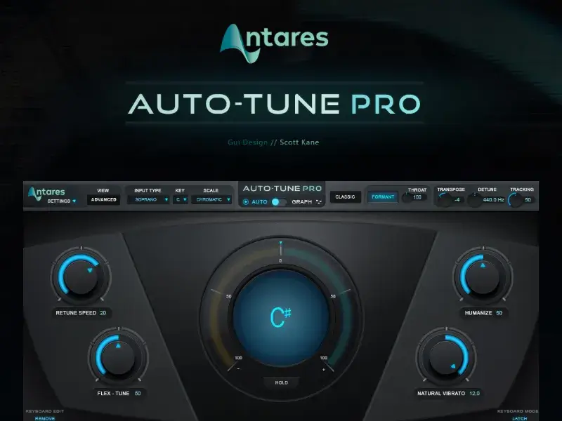
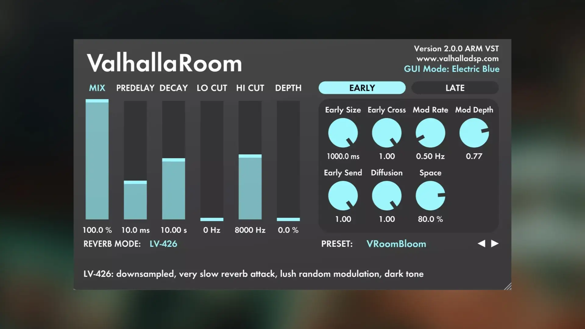

🎙️ Mis plugins favoritos para voces
10 de septiembre, 2025
Cuando trabajo voces, me gusta usar herramientas que me den claridad, control y estilo. Estos son los plugins que más uso y recomiendo:
1. Auto-Tune Pro – Afinación precisa
Ideal para mantener las voces afinadas sin perder el sentimiento. Lo uso para dar ese toque urbano o para correcciones más sutiles.

2. FabFilter Pro-Q3 – Ecualización profesional
Este plugin me permite limpiar la voz, quitar frecuencias sucias y darle presencia sin distorsionar.
3. Valhalla Room – Reverb mágica
Me encanta este plugin por cómo transforma una voz seca en algo más profundo, espacial y emocional.

4. CLA Vocals – Todo en uno
Cuando quiero ir rápido, CLA Vocals me da compresión, EQ, reverb y delay en un solo panel fácil de usar.
Estos plugins me han ayudado a definir mi sonido. Si estás empezando, prueba las demos y ve cuál se adapta mejor a tu estilo.